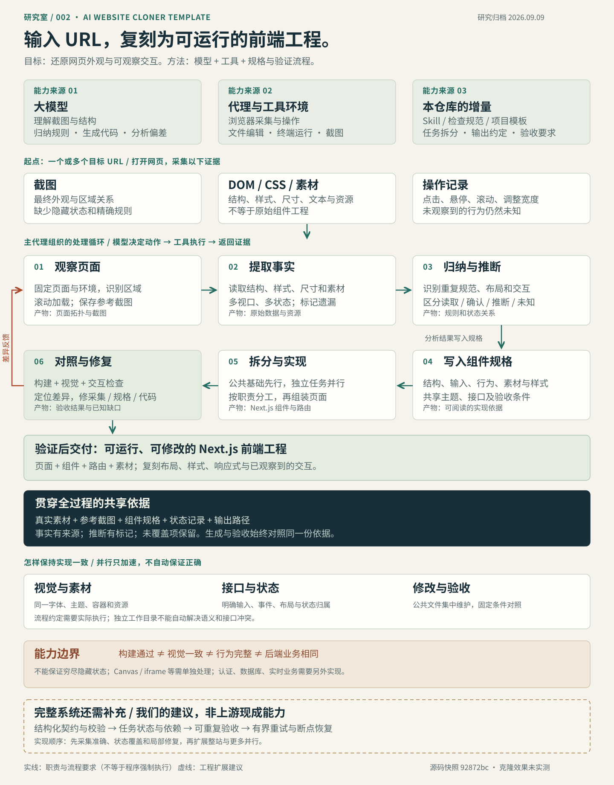

理解与生成
看懂画面、归纳结构、编写代码、分析偏差。
看懂画面、归纳结构、编写代码、分析偏差。
打开网页、读取 DOM/CSS、操作页面、运行与截图。
采集清单、组件规格、任务拆分、模板和验收要求。
01 / THE WHOLE PICTURE
从信息输入到反馈修复，
区分已有流程和建议补充的机制。

02 / HOW IT WORKS
点击步骤查看输入、动作和产物。
这里是方法说明，不执行网页克隆。
01 / 观察页面
固定 URL、视口和主题，观察整体区域；滚动触发懒加载，并保存参考截图。
构图、区域关系、视觉层次。缺少精确布局规则与隐藏状态。
层级、文本、实际样式与素材。运行时结构不等于原始组件源码。
点击、悬停、滚动与调整宽度；记录状态变化，补充静态信息。
原创示例 / 非真实测量
下列状态按示例数据展示。行为被观察到，并不能证明原站内部采用了哪一种事件机制。
示例读数：高度 88px；背景透明；无阴影。
操作确认 滚动前后外观不同。
仍属推断 是否使用 IntersectionObserver。
先读取字体、颜色、间距、布局等事实，再跨元素归纳重复。结合可访问 CSS 变量；保留特例，不随意把相近值合并。
保存状态 → 执行动作 → 比较 DOM、样式、内容、URL、焦点和网络 → 恢复。重复实验，排除计时巧合。
多视口采样，变化区间补测，区分断点、容器查询、流式尺寸和自动换行；用中间宽度复验。
先素材和字体，再整体几何，之后局部样式，最后状态与动画。固定环境对照，沿证据链定位根因。
03 / WHAT CHANGED
与 8 月 29 日研究的 Screenshot-to-Code 比较。
比较固定版本的形态，不声称效果优劣。
| 维度 | Screenshot-to-Code | 本次模板 |
|---|---|---|
| 形态 | 独立前后端 Agent 工作台 | Skill + Next.js 起始工程 |
| 信息来源 | 截图、录屏、文字等视觉参考 | 在线截图 + DOM/CSS + 操作 |
| 执行循环 | 项目后端实现模型与工具循环 | 复用宿主编程代理的循环 |
| 主要产物 | 单个 index.html 原型 | 多文件组件与路由工程 |
| 共同边界 | 依赖外部模型与工具；外观相似不能证明真实业务一致。 | |
Screenshot-to-Code：d026163；本模板：92872bc。此前判断为保留研究，暂不安装或集成。查看既有记录 ↗
04 / CONTROL & LIMITS
这些要求帮助减少遗漏，但仍依赖代理执行。
先提高采集与验收可靠性，再扩展整站和并行。
构建通过 ≠ 视觉一致
视觉一致 ≠ 行为完整
行为相似 ≠ 后端业务相同
对我们的意义吸收方法，按需使用；当前完成研究归档。已有工具能力与它高度重叠，是否引入整库应由实际重复任务决定。本次没有克隆质量、费用或耗时对照。
05 / KEEP & REUSE
文档、网页、架构图共同归档。
全部示例在本地运行，不调用模型。
本次为固定版本源码研究，不是上游功能实测。架构图和示例为本研究原创，虚线扩展尚未实现。
{kind=link}
{kind=link}